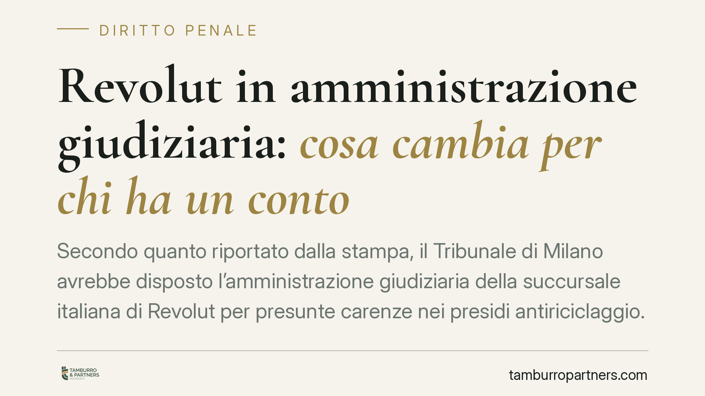

Revolut in amministrazione giudiziaria: cosa cambia per chi ha un conto
Secondo quanto riportato dalla stampa, il Tribunale di Milano avrebbe disposto l'amministrazione giudiziaria della succursale italiana di Revolut per presunte carenze nei presidi antiriciclaggio. È una misura di prevenzione, non una condanna penale. Chiariamo la differenza e cosa valutare per chi utilizza un conto Revolut, senza cedere ad allarmismi.

La notizia: amministrazione giudiziaria, non sequestro
In base a quanto riferito dalla stampa, il Tribunale di Milano avrebbe disposto l'amministrazione giudiziaria della succursale italiana dell'intermediario, su impulso della Procura distrettuale antimafia e a seguito di accertamenti della Guardia di Finanza. Alla base vi sarebbero presunte carenze nei presidi antiriciclaggio.
Il dato va letto con precisione. L'amministrazione giudiziaria è una misura di prevenzione patrimoniale, non una sanzione penale, non un sequestro dei conti e non una revoca della licenza bancaria. Secondo le informazioni rese note, i servizi proseguirebbero regolarmente e l'operatività dei clienti non risulterebbe sospesa.
Inquadramento normativo: l'art. 34 del Codice antimafia
La misura è prevista dall'art. 34 del D.lgs. 159/2011 (Codice antimafia). Si applica quando emergono elementi per ritenere che l'esercizio di un'attività economica possa, anche in modo inconsapevole, agevolare l'attività di soggetti pericolosi o collegati a reati gravi.
Il punto decisivo è la cosiddetta agevolazione colposa: non occorre che l'impresa abbia voluto favorire condotte illecite. È sufficiente che l'inadeguatezza dei controlli abbia reso possibile un'operatività sospetta. Per questo la misura non presuppone un'accusa penale a carico dell'intermediario: ha funzione di risanamento, affidando la gestione a un amministratore nominato dal giudice per un periodo determinato, al fine di ripristinare presidi conformi.
È una differenza sostanziale. Il sequestro colpisce beni di provenienza illecita; la revoca della licenza estingue l'attività. L'amministrazione giudiziaria, invece, mantiene in vita l'impresa e ne corregge le disfunzioni sotto controllo giudiziario.
Cosa cambia per chi ha un conto Revolut
Sul piano pratico, per il correntista l'impatto diretto appare limitato: i fondi restano nella disponibilità del titolare e le operazioni ordinarie proseguono. La misura incide sull'organizzazione dell'intermediario, non sui singoli rapporti.
È però ragionevole attendersi, nei prossimi mesi, controlli più stringenti su questo operatore: maggiori richieste di documentazione, verifiche sull'origine dei fondi (adeguata verifica rafforzata) e tempi più lunghi per alcune operazioni. Chi opera con flussi significativi o non immediatamente giustificabili potrebbe ricevere richieste di chiarimento.
Attenzione a un rischio che riguarda il cliente, non l'intermediario. Chi, temendo controlli, movimenta somme in modo artificioso può incorrere in profili penali propri. Il riferimento è all'autoriciclaggio ex art. 648-ter.1 c.p., che punisce chi reimpiega o trasferisce denaro di provenienza illecita ostacolandone l'identificazione. Spezzare importi in più operazioni di modesta entità (frazionamento) per restare sotto le soglie di segnalazione è una condotta tipicamente valorizzata negli accertamenti.
Cosa fare in concreto
- Verificare lo stato del proprio rapporto tramite i canali ufficiali dell'intermediario, senza affidarsi a comunicazioni non verificate o a messaggi sospetti.
- Diversificare, se si gestiscono liquidità rilevanti, i rapporti di conto, così da ridurre l'esposizione operativa a un singolo intermediario.
- Conservare la documentazione sull'origine dei fondi (contratti, fatture, buste paga, atti di provenienza): è lo strumento più solido per rispondere a eventuali richieste di adeguata verifica.
- Non compiere operazioni frazionate o elusive: movimentazioni artificiose per aggirare i controlli possono tradursi in responsabilità penali a carico del titolare.
- Rivolgersi a un professionista qualora si ricevano richieste di chiarimento su movimentazioni rilevanti, prima di dare risposte frettolose.
Un chiarimento finale
La misura, se confermata nei termini riferiti, ha natura di risanamento e non di condanna. Separare il piano della prevenzione da quello della sanzione penale è l'unico modo per leggere correttamente la vicenda ed evitare reazioni eccessive. È comunque opportuno valutare per tempo eventuali posizioni dubbie, con riferimento alla tracciabilità e alla provenienza dei propri fondi.
Contributo informativo a cura di Tamburro & Partners Avvocati. Non costituisce parere legale.
Ogni condominio ha una storia a sé.
Se gestisci un'amministrazione e vuoi un confronto su una specifica questione condominiale, scrivi allo studio. Ti rispondiamo entro un giorno lavorativo.